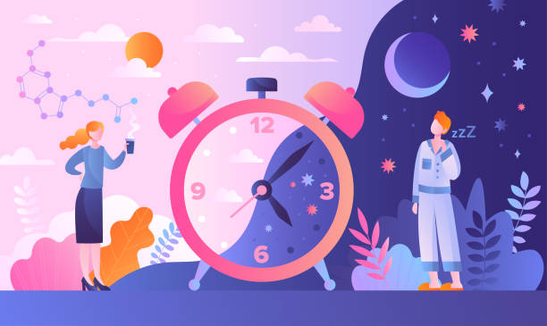
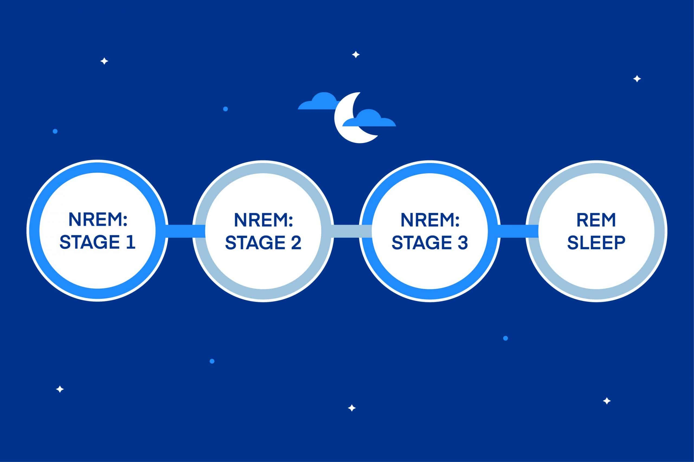

a normal, reversible, recurrent state of reduced responsiveness to external stimulation that is accompanied by complex and predictable changes in physiology. These changes include coordinated, spontaneous, and internally generated brain activity as well as fluctuations in hormone levels and relaxation of musculature. A succinctly defined specific purpose of sleep remains unclear, but that is partly because sleep is a dynamic state that influences all physiology, rather than an individual organ or other isolated physical system. Sleep contrasts with wakefulness, in which state there is an enhanced potential for sensitivity and an efficient responsiveness to external stimuli. The sleep-wakefulness alternation is the most-striking manifestation in higher vertebrates of the more-general phenomenon of periodicity in the activity or responsivity of living tissue. There is no single perfectly reliable criterion for defining sleep. It is typically described by the convergence of observations satisfying several different behavioral, motor, sensory, and physiological criteria. Occasionally, one or more of those criteria may be absent during sleep (e.g., in sleepwalking) or present during wakefulness (e.g., when sitting calmly), but even in such cases there usually is little difficulty in achieving agreement among observers in the discrimination between the two behavioral states
During a normal sleep period, you progress through four to five sleep cycles. Each sleep cycle is made up of four individual sleep stages. The four stages of sleep are further broken down into two categories: rapid eye movement (REM) and non-REM sleep. These categories are important because what happens during REM sleep is dramatically different from what happens during non-REM stages. The first three stages of sleep are comprised of non-REM activity. Stage 1 is short, representing the act of dozing off and transitioning into sleep. In Stage 2 the body and mind slow down as you settle into sleep. It’s easiest to be awoken during these first two stages. In Stage 3, also known as deep sleep, the body is in recovery mode, slowing down even further. At the same time, overall brain activity slows and shows a tell-tale pattern of pulses of activity1 that are believed to help prevent unwanted awakenings. The fourth stage is REM sleep. During REM periods, brain activity shoots back up to levels similar to when you’re awake – which explains why REM is associated with the most intense dreams. While breathing and heart rate increase during REM sleep, most muscles are paralyzed, which keeps us from acting out those vivid dreams. Each sleep cycle takes between 70 and 120 minutes2. In the first sleep cycles of the night, more time is spent in non-REM sleep. The majority of REM sleep happens during the second half of the night. The progression of sleep stages and cycles in one sleep period is known as sleep architecture.
Your body cycles through four stages of sleep. This cycle occurs multiple times throughout the night for different lengths of time, varying from 70 to 120 minutesTrusted Source each. The stages generally repeat about four to give times during a 7- to 9-hour sleep period. The pattern includes two major phases of sleep: non-rapid eye movement (non-REM) sleep and REM (rapid eye movement) sleep. The four stages of sleep include three stages of non-REM sleep and one stage of REM sleep. As the names suggest, non-REM sleep features an absence of eye movements, whereas REM sleep, when dreaming occurs, is characterized by rapid eye movements The four stages of sleep are listed below.
Stage 1 occurs when you first fall asleep. As your body enters light sleep, your brain waves, heart rate, and eye movements slow down. This phase lasts for about 7 minutes.
This stage involves the light sleep just before deep sleep. Your body temperature decreases, your eye movements stop, and your heart rate and muscles continue to relax. Your brain waves briefly spike then slow down. During a night of sleep, you spend the most time in stage 2.
In stages 3 and 4, deep sleep begins. Your eyes and muscles don’t move, and your brain waves slow down even further. Deep sleep is restorative. Your body replenishes its energy and repairs cells, tissues, and muscles. You need this phase to feel awake and refreshed the next day.
This stage first happens about 90 minutes after you fall asleep. Your eyes move quickly from side to side during REM sleep. In REM sleep, your brain waves and eye movements increase. Your heart rate and breathing also speed up. Dreaming often happens during REM sleep. Your brain also processes information during this stage, making it important for learning and memory.
Although it may be less apparent to people living in societies in which food sources are plentiful, one of the strongest factors in natural selection is competition for and effective utilization of energy resources. The energy conservation theory suggests that the primary function of sleep is to reduce an individual’s energy demand and expenditure during part of the day or night, especially at times when it is least efficient to search for food. Research has shown that energy metabolism is significantly reduced during sleep (by as much as 10 percent in humans and even more in other species). For example, both body temperature and caloric demand decrease during sleep, as compared to wakefulness. Such evidence supports the proposition that one of the primary functions of sleep is to help organisms conserve their energy resources. Many scientists consider this theory to be related to, and part of, the inactivity theory.
Another explanation for why we sleep is based on the long-held belief that sleep in some way serves to "restore" what is lost in the body while we are awake. Sleep provides an opportunity for the body to repair and rejuvenate itself. In recent years, these ideas have gained support from empirical evidence collected in human and animal studies. The most striking of these is that animals deprived entirely of sleep lose all immune function and die in just a matter of weeks. This is further supported by findings that many of the major restorative functions in the body like muscle growth, tissue repair, protein synthesis, and growth hormone release occur mostly, or in some cases only, during sleep. Other rejuvenating aspects of sleep are specific to the brain and cognitive function. For example, while we are awake, neurons in the brain produce adenosine, a by-product of the cells' activities. The build-up of adenosine in the brain is thought to be one factor that leads to our perception of being tired. (Incidentally, this feeling is counteracted by the use of caffeine, which blocks the actions of adenosine in the brain and keeps us alert.) Scientists think that this build-up of adenosine during wakefulness may promote the "drive to sleep." As long as we are awake, adenosine accumulates and remains high. During sleep, the body has a chance to clear adenosine from the system, and, as a result, we feel more alert when we wake.
One of the most recent and compelling explanations for why we sleep is based on findings that sleep is correlated to changes in the structure and organization of the brain. This phenomenon, known as brain plasticity, is not entirely understood, but its connection to sleep has several critical implications. It is becoming clear, for example, that sleep plays a critical role in brain development in infants and young children. Infants spend about 13 to 14 hours per day sleeping, and about half of that time is spent in REM sleep, the stage in which most dreams occur. A link between sleep and brain plasticity is becoming clear in adults as well. This is seen in the effect that sleep and sleep deprivation have on people's ability to learn and perform a variety of tasks. This theory and the role of sleep in learning are covered in greater detail in Sleep, Learning, and Memory. Although these theories remain unproven, science has made tremendous strides in discovering what happens during sleep and what mechanisms in the body control the cycles of sleep and wakefulness that help define our lives. While this research does not directly answer the question, "Why do we sleep?" it does set the stage for putting that question in a new context and generating new knowledge about this essential part of life.